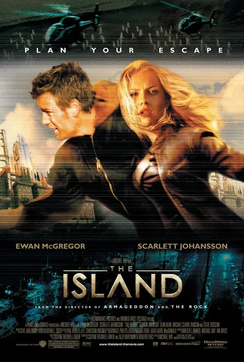

Фильм · 2005 · Боевик, Приключения
Линкольн Шесть-Эхо живет под стерильным куполом, где всё предопределено: еда, работа и лотерея, победители которой отправляются на «Остров» — последнее незагрязненное место на Земле. Но однажды он выигрывает в лотерею и вместе с Джордан узнает, что «Остров» — это операционная: они — страховые клоны состоятельных клиентов, а «выигрыш» означает, что их пустят на органы. Это боевик Майкла Бэя, поднимающий непростой вопрос: что происходит, когда тебя создают как «запчасть», — и кто несет ответственность за твою жизнь?
Lincoln Six-Echo lives in a sterile dome where everything is decided: food, work, a lottery whose winners go to 'the Island' — the last uncontaminated place on Earth. Then he wins the lottery — and with Jordan discovers the Island is an operating room, they are insurance clones for wealthy clients, and 'winning' means being harvested for organs. A Michael Bay action film with a hard question inside: what happens when you were made as a spare part — and who answers for your life?
← Вернуться в каталог IT Movies